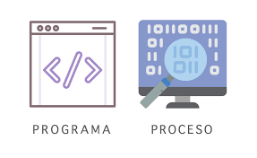
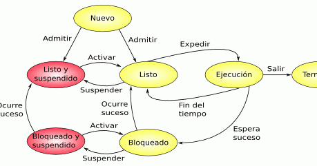
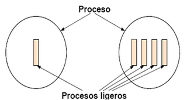
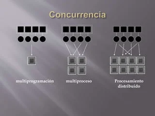
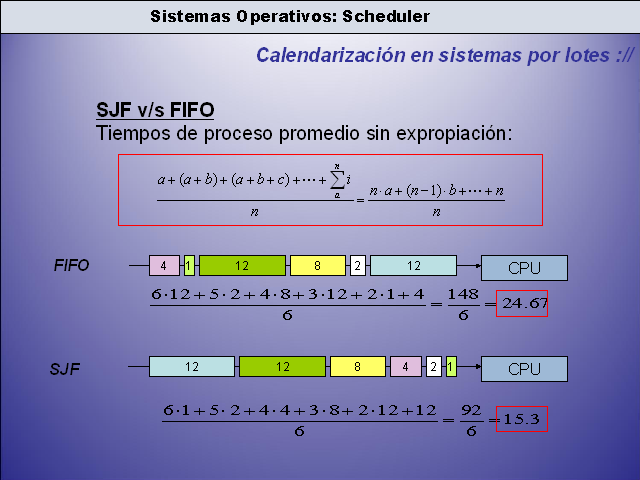
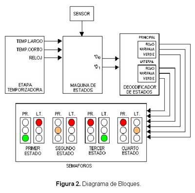

2.1. Concepto

Un proceso es un programa en ejecución. Es una instancia de un programa que está siendo ejecutado, y puede incluir el código del programa, su estado actual, los valores de las variables y otros recursos que utiliza.
Cada proceso tiene asociado un conjunto de recursos como la CPU, memoria, dispositivos de entrada/salida y archivos. En un sistema operativo, los procesos permiten la ejecución de múltiples tareas de forma simultánea (o seudoparalela mediante la multitarea).
2.1.1. Bloque de control de proceso (BCP)
El BCP (PCB, Process Control Block) es una estructura de datos utilizada por el sistema operativo para almacenar toda la información relacionada con un proceso particular. Esencialmente, es el "perfil" del proceso.
El BCP contiene:
- Identificador de proceso (PID).
- Estado del proceso (ejecución, bloqueado, etc.).
- Contador de programa (dirección de la siguiente instrucción a ejecutar).
- Registro de la CPU (valores actuales de los registros del procesador).
- Información de memoria (ubicación de los segmentos de código, datos y pila).
- Información de I/O (dispositivos que el proceso está utilizando).
- Información de prioridades y permisos.
2.2. Estados y Transiciones de los procesos

Un proceso puede pasar por varios estados durante su ciclo de vida. Los estados básicos son:
- Nuevo: El proceso ha sido creado pero aún no está listo para ejecutarse.
- Listo: El proceso está en espera para ser ejecutado por la CPU.
- Ejecución: El proceso está utilizando la CPU.
- Bloqueado (espera): El proceso está esperando un evento externo (como la finalización de una operación de I/O).
- Terminado: El proceso ha terminado su ejecución.
Las transiciones entre estados son los cambios que puede experimentar un proceso a lo largo de su ejecución:
- Nuevo a Listo: Cuando un proceso ha sido creado y está listo para ser ejecutado.
- El proceso ha sido cargado en la memoria y está esperando a ser ejecutado.
- Listo a Ejecución: Ocurre cuando el planificador de procesos (scheduler) selecciona un proceso para ejecutarse y le asigna la CPU.
- El sistema operativo selecciona al proceso para ejecutarse en la CPU.
- Ejecución a Bloqueado: Cuando un proceso necesita esperar a que ocurra un evento externo (como una operación de entrada/salida), se bloquea.
- El proceso no puede continuar hasta que ocurra un evento externo (por ejemplo, entrada de datos del usuario o finalización de una lectura de disco).
- Bloqueado a Listo: Ocurre cuando el evento que el proceso estaba esperando se completa, lo que lo pone en espera para ejecutarse nuevamente.
- El evento esperado por el proceso ha ocurrido, por lo que puede reanudar la ejecución.
- Ejecución a Listo: Cuando un proceso en ejecución es interrumpido (por ejemplo, por un cambio de contexto o preemisión), regresa al estado listo.
- Ocurre cuando el sistema operativo decide suspender temporalmente el proceso en ejecución para dar paso a otro proceso (ejemplo: un proceso de mayor prioridad).
- Ejecución a Terminado: Cuando un proceso finaliza su ejecución, ya sea porque ha terminado sus tareas o porque se le ha ordenado finalizar.
- El proceso ha finalizado su ejecución.
2.3. Procesos ligeros: Hilos o hebras

Un hilo es una unidad más pequeña de ejecución dentro de un proceso. Un proceso puede tener uno o varios hilos, lo que permite la ejecución concurrente dentro del mismo proceso. Los hilos comparten el mismo espacio de direcciones de memoria, pero tienen su propio contador de programa y conjunto de registros.
Los hilos permiten realizar múltiples tareas dentro de un mismo proceso, lo que mejora la eficiencia y la respuesta del sistema, ya que diferentes partes de un proceso pueden ejecutarse al mismo tiempo.
Ventajas de los hilos sobre los procesos:
- Menor sobrecarga: los hilos consumen menos recursos del sistema, ya que no requieren un cambio de contexto completo como los procesos.
- Ejecución concurrente: permiten que diferentes partes de un programa se ejecuten al mismo tiempo, aprovechando mejor la capacidad de procesamiento de los sistemas multinúcleo.
Existen dos tipos principales:
- Hilos del kernel: Administrados directamente por el sistema operativo.
- Hilos del usuario: Administrados por una biblioteca en el espacio del usuario.
2.4. Sincronización entre procesos
La sincronización entre procesos es crucial para evitar condiciones de carrera y garantizar que los procesos que acceden a recursos compartidos lo hagan de manera segura. El sistema operativo proporciona mecanismos de sincronización para coordinar la ejecución de los procesos que comparten recursos.
Algunos mecanismos de sincronización son:
- Exclusión mutua: Asegura que solo un proceso pueda acceder a un recurso compartido a la vez.
- Bloqueo (mutex): Un objeto que permite la exclusión mutua, controlando el acceso a un recurso compartido.
- Variables de condición: Permiten que un proceso espere hasta que otra parte del programa cumpla con una condición específica.
2.5. Concurrencia y secuenciabilidad

- Concurrencia: la capacidad de un sistema para ejecutar múltiples procesos o hilos en el mismo periodo de tiempo, aunque no necesariamente de manera simultánea. La concurrencia permite manejar múltiples tareas de manera eficiente, particularmente en sistemas donde los recursos son limitados.
- Secuencialidad: es cuando las tareas se ejecutan una tras otra, de manera que una debe completarse antes de que la siguiente pueda comenzar. Es un enfoque simple, pero no aprovecha el paralelismo disponible en sistemas modernos.
2.6. Niveles, objetivos y criterios de planificación
La planificación de procesos se refiere a cómo el sistema operativo decide qué proceso o hilo debe ejecutarse en un momento dado.
Niveles de planificación:
- Planificación a largo plazo: decide qué procesos serán admitidos en el sistema y cuándo.
- Planificación a medio plazo: maneja la transición entre la memoria principal y la secundaria.
- Planificación a corto plazo: decide qué proceso en estado "listo" debe pasar a la CPU.
Objetivos de la planificación:
- Maximización de la eficiencia: asegurar que los recursos del sistema se utilicen de la mejor manera posible.
- Minimización del tiempo de espera y respuesta: reducir el tiempo que los procesos pasan esperando y mejorar la respuesta del sistema.
Criterios de planificación:
- Primero en llegar, primero en ser atendido (FCFS): los procesos se ejecutan en el orden en que llegan.
- Planificación por prioridades: los procesos se ejecutan en función de una prioridad asignada.
- Round-Robin: se asigna una cantidad fija de tiempo a cada proceso en cola.
2.7. Técnicas de administración del planificador

Existen varias técnicas de administración del planificador que permiten determinar el orden en el que los procesos serán ejecutados. Algunos de los algoritmos más comunes incluyen:
- FIFO (First-In, First-Out): Es el algoritmo más simple. Los procesos son atendidos en el orden en que llegan a la cola de listos. El primer proceso en entrar es el primero en salir.
Ventajas:
- Fácil de implementar y entender. No requiere información adicional sobre los procesos.
Desventajas:
- Puede provocar tiempos de espera prolongados, especialmente si un proceso largo llega antes que otros más cortos (efecto "convoy").
- Round Robin: Cada proceso recibe un intervalo de tiempo fijo (quantum) para ejecutarse. Si un proceso no termina en su quantum, se pone al final de la cola y se asigna la CPU al siguiente proceso.
Ventajas:
- Justo para todos los procesos y mantiene un buen tiempo de respuesta para los sistemas interactivos.
Desventajas:
- Si el quantum es demasiado pequeño, puede resultar en una alta sobrecarga de contexto y un bajo rendimiento general.
- SJF (Shortest Job First): Este algoritmo selecciona el proceso con el tiempo de ejecución más corto para ser ejecutado primero. Puede ser preemptivo (interrumpiendo un proceso en ejecución si llega uno más corto) o no preemptivo.
Ventajas:
- Minimiza el tiempo medio de espera y el tiempo de retorno.
Desventajas:
- Dificultad para estimar el tiempo de ejecución. Puede llevar a la inanición de procesos más largos (starvation).
- Planificación con prioridad: Cada proceso tiene una prioridad asignada. El planificador selecciona el proceso con la prioridad más alta para ejecutar. Puede ser preemptivo o no preemptivo.
Ventajas:
- Permite a los procesos críticos ser atendidos primero.
Desventajas:
- La asignación de prioridades puede ser complicada y, al igual que en SJF, puede causar inanición de procesos de baja prioridad
Para más detalles puedes consultar el siguiente mapa conceptual:
Mapa conceptual
2.8. Semáforo

Un semáforo es una estructura de sincronización que controla el acceso de los procesos a los recursos compartidos. Se pueden clasificar en dos tipos:
- Semáforo binario: Solo tiene dos valores, 0 y 1. Es útil para implementar exclusión mutua.
- Semáforo de conteo: Permite contar hasta un número máximo, lo que lo hace útil cuando varios procesos pueden acceder a un recurso compartido al mismo tiempo.
Los semáforos utilizan las operaciones wait (P) y signal (V) para gestionar los permisos de acceso de los procesos:
wait(P): Disminuye el valor del semáforo. Si el valor es menor o igual a cero, el proceso se bloquea.
signal(V): Incrementa el valor del semáforo. Si hay procesos bloqueados, uno de ellos se despierta.
2.9. Glosario de la unidad 2
- Proceso: Programa en ejecución que incluye el código, los datos y el estado necesario para su ejecución, gestionado por el sistema operativo.
- Estado del proceso: Fase en la que se encuentra un proceso, como nuevo, listo, ejecutando, bloqueado o terminado.
- Transición de proceso: Cambios entre los diferentes estados de un proceso, como pasar de "listo" a "ejecutando" o de "bloqueado" a "listo".
- Hilo (Thread): Unidad mínima de ejecución dentro de un proceso. Varios hilos pueden coexistir dentro de un mismo proceso, compartiendo recursos.
- Hilo ligero: Término que hace referencia a los hilos (threads), ya que son más "ligeros" en términos de uso de recursos que los procesos completos.
- Concurrencia: Capacidad de un sistema para ejecutar múltiples procesos o hilos simultáneamente, o alternando de manera rápida entre ellos.
- Secuencialidad: Ejecución de tareas de forma secuencial, una después de la otra, sin solapamiento.
- Planificación (Scheduling): Mecanismo por el cual el sistema operativo decide el orden y el tiempo que un proceso o hilo pasa en la CPU.
- Planificación FIFO (First-In, First-Out): Algoritmo de planificación donde el primer proceso en llegar es el primero en ejecutarse.
- Planificación Round Robin: Algoritmo de planificación que asigna un intervalo de tiempo (quantum) fijo a cada proceso, alternándolos en un ciclo.
- Planificación SJF (Shortest Job First): Algoritmo de planificación que prioriza los procesos con el tiempo de ejecución más corto.
- Planificación por prioridad: Técnica en la que cada proceso tiene asignada una prioridad, ejecutándose primero aquellos con prioridad más alta.
- Quantum: Unidad de tiempo en la planificación de Round Robin que define cuánto tiempo un proceso puede ejecutar antes de ser interrumpido.
- Preemptivo: Tipo de planificación en el que un proceso en ejecución puede ser interrumpido para darle paso a otro proceso más prioritario.
- No preemptivo: Tipo de planificación donde los procesos no son interrumpidos hasta que terminen su ejecución o entren en un estado de espera.
- Colas múltiples (Multilevel Queue): Técnica de planificación en la que los procesos se agrupan en diferentes colas, cada una con su propio algoritmo de planificación.
- Colas de retroalimentación múltiple (Multilevel Feedback Queue): Variante de colas múltiples que permite que los procesos cambien de cola según su comportamiento (por ejemplo, si consumen más tiempo de CPU del esperado).
- Inanición (Starvation): Situación donde un proceso no recibe recursos (como tiempo de CPU) por un largo período debido a la priorización de otros procesos.
- Tiempo de espera (Waiting Time): Tiempo total que un proceso pasa esperando en la cola de listos antes de ser ejecutado.
- Tiempo de retorno (Turnaround Time): Tiempo total desde que un proceso es admitido en el sistema hasta que finaliza su ejecución.
- Multiprogramación: Técnica en la que varios procesos se cargan en la memoria para ser ejecutados, permitiendo la concurrencia de varios programas en un sistema.
- CPU: Unidad central de procesamiento, componente del sistema que ejecuta instrucciones de los procesos.
- Contexto de proceso: Conjunto de información (valores de los registros, contador de programa, etc.) que define el estado actual de un proceso cuando se suspende o cambia de estado.
- Cambio de contexto (Context Switch): Proceso por el cual el sistema operativo guarda el estado de un proceso y carga el estado de otro, para que este último pueda ejecutarse.
- Sistemas en tiempo real: Sistemas donde las tareas deben completarse dentro de plazos estrictos. Usan planificación con restricciones de tiempo para garantizar el cumplimiento de los plazos.